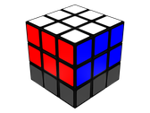

Rookies Rubic's Cubix
2nd Layer
The edges
These are the steps that will solve the
2nd layer
.
1. Hold the cube with the
white
face upwards.
2. Find the piece that has
two colors
.
3. If the edge is not in the
bottom
layer, then to move it to the bottom do:
R' B' R
4. Turn the
bottom
layer to match the edge with the
center
colour.
5. Repeat steps
2 to 4
for each of the other
3 edge
pieces.

Welcome
1st layer
2nd layer
3rd layer
 Rookies Rubic's Cubix
Rookies Rubic's Cubix